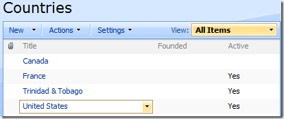
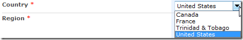

SPFilterDropdown
Function
$().SPServices.SPFilterDropdown
Certification


Functionality
The SPFilterDropdown function allows you to filter the values available in a Lookup column using CAML against the Lookup column's source list. This function works with all three types of "dropdown": <20 options (simple select), 20+ options (complex select), and multi-select.
Thanks to Alex Lee (alexlee797) and Ryan (rnshaw) for contributing their versions of this function, which I used to build the one available here. You can see their versions in these two discussion threads: Filter Dropdowns and SPCascadeDropDowns - CAML query on parent column?
Prerequisites
- The relationship list contains the relationshipListColumn
- The dropdown for columnName is a lookup into relationshipList's relationshipListColumn OR a list column which is a lookup into another list column ("secondary list").
Syntax
$().SPServices.SPFilterDropdown({
relationshipWebURL: "",
relationshipList: "",
relationshipListColumn: "",
relationshipListSortAscending: true, // Added in 2013.01
relationshipListSortColumn: "",
columnName: "",
listName: $().SPServices.SPListNameFromUrl(),
promptText: "",
noneText: "(None)",
CAMLQuery: "",
CAMLQueryOptions: "<QueryOptions></QueryOptions>",
completefunc: null,
debug: false
});
relationshipWebURL
The URL of the Web (site) which contains the relationshipList. If not specified, the current site is used. Examples would be: "/", "/Accounting", "/Departments/HR", etc. Note: It's always best to use relative URLs.
relationshipList
The name or GUID of the list which contains the parent/child relationships. If you choose to use the GUID, it should look like: "{E73FEA09-CF8F-4B30-88C7-6FA996EE1706}". Note also that if you use the GUID, you do not need to specify the relationshipWebURL if the list is in another site.
relationshipListColumn
The StaticName of the column in the relationshipList which is used for the lookup column
relationshipListSortColumn
If specified, sort the options in the dropdown by this column otherwise the options are sorted by relationshipListColumn
relationshipListSortAscending
Allows sorting either ascending (true) or descending (false). The default is true (ascending).
columnName
The DisplayName of the column in the form
listName
By default, set to the list name for the current context based on the URL. If your form is outside the context of the list, then you can specify the listName yourself.
promptText
Text to use as prompt. If included, {0} will be replaced with the value of childColumn. The default value is "".
NOTE: I discourage the use of this option. Yes, I put it into the function, but if the user doesn't make a choice, they get an ugly error because SharePoint doesn't understand it as an option. I've left in in for backward compatibility.
Deprecated in v0.7.1.
noneText
Text to use for the (None) selection. Provided for non-English language support. The default value is "(None)".
CAMLQuery
The CAMLQuery option allows you to specify the filter on the relationshipList. The additional filter will be <And>ed with the existing CAML which is checking for matching items based on the parentColumn selection. The CAMLQuery should contain a CAML fragment such as:
CAMLQuery: "<Eq><FieldRef Name='Status'/><Value Type='Text'>Active</Value></Eq>"
CAMLQueryOptions
This option can be used to specify additional options for retrieval from the sourceList. See the MSDN documentation for GetListItems for the syntax.
completefunc
If specified, the completefunc will be called upon completion of the filtering. Uses for the completefunc: consistent default formatting overrides, additional lookup customizations, image manipulations, etc. You can pass your completefunc in either of these two ways:
completefunc: function() {
...do something...
},
or
completefunc: doSomething, // Where doSomething is the name of your function
debug
Setting debug: true indicates that you would like to receive messages if anything obvious is wrong with the function call, like using a column name which doesn't exist. I call this debug mode.
Example
In this example, we'll filter the lookup column called "Country" so that we only include those Countries where the Active column is set to 'Yes'. In the screenshot below, you can see that Canada is not currently 'Active'.

In the Sales Opportunities list, we have a lookup column called Country, which gets its values from the Title column in the Countries list.

If we add the call to SPFilterDropdown below...
$().SPServices.SPFilterDropdown({
relationshipList: "Countries",
relationshipListColumn: "Title",
columnName: "Country",
CAMLQuery: "<Eq><FieldRef Name='Active' /><Value Type='Boolean'>1</Value></Eq>",
completefunc: null,
debug: false
});
...then 'Canada' is filtered out of the available values because it is not 'Active'.